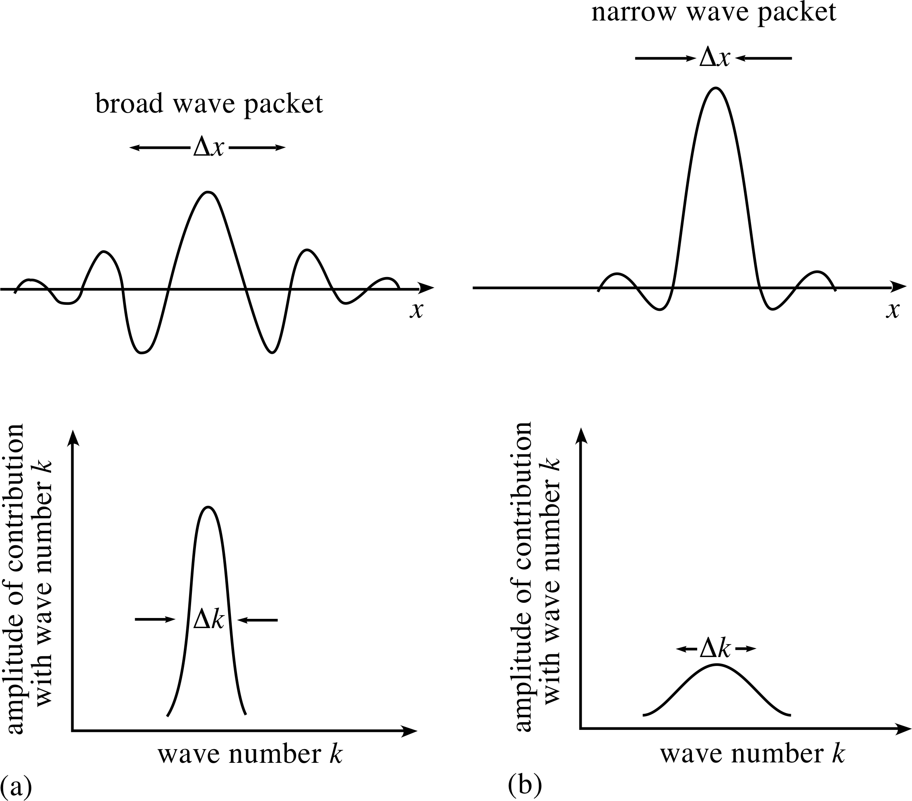

The Physical Universe
Metaphysical Bifurcation
Typical explanations of what the physical universe is made of include
space, time, and matter, or matter and energy, or something more
complicated and inconceivable.1 But all of these
explanations share in common that the universe is conceived of in an
abstract mathematical way. Light is electromagnetic radiation with a
certain range of wavelengths. Sound is a pressure wave created by
vibration. Odor is a mixture of tiny chemical particles released into
the air. Thoughts are patterns of neurons firing.
This physical picture of the universe cuts out nearly everything
involved in the human point of view. The outside world and our
perceptions of that outside world become completely seperate, distinct
things.2 This bifurcation into primary qualities, the
noumenal, and secondary qualities, the phenomenal, is at the heart of
science. Primary qualities such as size, shape, and position are seen
as those things which are real about the object. Secondary qualities
like color, taste, and smell then are mere products of the mind, and
the mind is reduced to the primary qualities of the brain.
The result of this position is that everything is reduced to an
abstraction. No longer do we have a universe because all that's left
is a model, and we've mistaken the model to be all that there is.
History
Galileo Galilei (1564-1642), the first known to give an argument for a
version of the primary/secondary quality distinction, uses many
examples like the oar in the water to argue that the various
appearances of a body are inessential while the primary affections
like size, shape, and number are essential to bodies.3
Likewise, René Descartes (1596-1650) distinguishes between sensible
qualities and material bodies.4 This is seen clearly in his
ideas that the mind and body are distinct, independent substances and
that matter and motion can explain everything in the physical world.
This set the stage for Isaac Newton (1642-1727) to popularize a
philosophy of Cartesian metaphysics and extreme empiricism.5
This primarily took place through the Principia which was
seen as the exemplar of scientific achievement.6 By the end
of the 19th century, Newtonian physics appeared unassailable, and his
philosophy followed uncritically with all the authority that his
physics did. Despite this significant achievement, certain insoluble
difficulties remained. It wouldn't be long before a paradigm shift
took place in physics with the advent of the special theory of
relativity of Albert Einstein (1879-1955).7
Despite this theoretical shift away from Newtonian physics, Newton's
questionable metaphysical bifurcation still loomed large.
Quantum Mechanics
Physicists in the early 20th century began to reassess the foundations
of Newtonian physics. This reevaluation revealed that Newtonian
physics was not dealing with absolute entities that exist
independently of observation. Instead, it focused on what could be
observed, marking a significant shift in the understanding of the
physical world.8
Quantum mechanics is built on the foundations of Heisenberg's
uncertainty principle.9 The uncertainty principle, a key
element of quantum mechanics, imposes strict limits on our ability to
simultaneously know certain pairs of properties, such as an object's
position and momentum.10 This limitation underscores the
intrinsic subjectivity of quantum physics, as it implies that our
knowledge of the physical world is inherently statistical and
uncertain. Thus the wave-function in quantum mechanics represents a
system but doesn't describe the system itself; rather, it embodies our
knowledge of it.
Quantum mechanics also introduced the concept of wave-particle
dualism.11 This means that particles, such as electrons,
can behave both as discrete particles and as continuous waves
depending on the experimental context. This challenges classical ideas
of distinct, solid particles. This wave-particle dualism defies
classical determinism and highlights the inherent complexity of the
physical world.12
Conclusion
The scientific depiction of the universe as primarily a configuration
of matter, energy, space, and time, stripped of human-centric
qualities, presents a profound metaphysical riff in reality. This
division relegates the experience of humans to mere secondary
phenomena, products of the mind's interaction with a fundamentally
impersonal world. While this perspective has driven vast scientific
progress, it inevitably renders the cosmos an abstraction—a model
devoid of the qualitative aspects that comprise the entirety of human
perception. Thus, science, in its quest for objectivity, leaves the
universe unrecognisable to the beings trying to understand it because
of its fundamental philosophical assumptions.
The history from Galileo to Einstein reveals a trajectory of thought
that progressively abstracted the universe into mathematical laws and
principles. This underscores a certain philosophical undercurrent
wherein the sensory qualities experienced by humans are systematically
divorced from the 'real' qualities inherent in the physical world
itself. Galileo's primary qualities, Descartes' dualism, and Newton's
empirical framework set the stage for a world-view heavily predicated
on quantifiable phenomena at the expense of the qualitative aspects of
existence. As such, the achievements of classical physics, while
significant, left unresolved tensions and gaps that only began to
surface with the seismic shifts brought about by Einstein and the
quantum revolution; however, the basic philosophical difficulties
still remain.
The uncertainty principle and the concept of wave-particle duality
introduce challenges to the clear-cut distinctions of classical
physics. In this light, reality is no longer a static entity to be
dissected into primary and secondary qualities, but a dynamic and
partly unknowable interaction that resists full comprehension through
traditional scientific means. Quantum mechanics thus reveals the
limitations of deterministic laws and the crucial role of the
observer.
These three considerations demonstrate that science rests on certain
philosophical principles that are not self evidentally true. Its
presuppositions can be tested on philosophical grounds. We will
proceed by first examining which scientistic beliefs can be supported
or discredited and then look at what philosophical account can best
explain the scientific data.
Footnotes
1. Christopher Smeenk,
Philosophy of Cosmology, (Stanford Encyclopedia of Philosophy), 2017.
2. Lisa Downing,
George Berkeley, (Stanford Encyclopedia of Philosophy), 2011. Cartesian dualism
opened the door for the idealism of Berkeley.
3. Martha Bolton,
Primary and Secondary Qualities in Early Modern Philosophy, (Stanford Encyclopedia of Philosophy), 2022.
4. Lisa Downing,
Sensible Qualities and Material Bodies in Descartes and Boyle, 2010.
5. Andrew Janiak,
Newton’s Philosophy, (Stanford Encyclopedia of Philosophy), 2021.
6. George Smith,
Newton’s Philosophiae Naturalis Principia Mathematica, (Stanford Encyclopedia of Philosophy), 2007.
7. Imogen Clarke,
How to manage a revolution: Isaac Newton in the early twentieth
century, The Royal Society, 2014.
8. Jenann Ismael,
Quantum Mechanics, (Stanford Encyclopedia of Philosophy), 2020.
9. Jan Hilgevoord,
The Uncertainty Principle, (Stanford Encyclopedia of Philosophy), 2016. See also Physics
Explained,
What is the Heisenberg Uncertainty Principle? A wave packet
approach, (YouTube), 2023, for the most in depth video explanation.
10. Fermilab,
Demystifying the Heisenberg Uncertainty Principle, (YouTube), 2023. This video demonstrates the underpinnings of the
Heisenberg Uncertainty Principle in a simple way. Because waves govern
the quantum world, we can make certian observations about waves to
demonstrate uncertainty: (1) A wave function tells you the location of
an object with the uncertainty of Δx in the position. (2) All wave
functions can be made out of sines and cosines which is seen in Fast
Fourier Transform (FFT). (3) FFTs show the connection between
uncertainty in position and the number of waves. (4) Momentum is
related to wavelength.

Image from user137661,
Is this explanation for the uncertainty principle correct?, (physics.stackexchange), 2019. See also 3Blue1Brown's
But what is the Fourier Transform? A visual introduction
(YouTube), 2018 and
The more general uncertainty principle, regarding Fourier
transforms
(YouTube), 2018.
11. Meinard Kuhlmann,
Quantum Field Theory, (Stanford Encyclopedia of Philosophy), 2020.
12. Wayne Myrvold,
Philosophical Issues in Quantum Theory, (Stanford Encyclopedia of Philosophy), 2022.
The Cartesian Dilemma
Scientific Dualism
The concept of scientific dualism, emerging in the 16th and 17th
centuries, is rooted in the resurgence of Platonic thought,
significantly influenced by Renaissance figures such as Marsilio
Ficino and Pico della Mirandola. This revival emphasized numerical and
harmonic principles, impacting notable thinkers like Nicolaus
Copernicus during his studies in Bologna. Copernicus's
astronomical theories, pivotal in the evolution of modern physics,
underscored a growing conviction in the era that mathematics was the
foundation of true knowledge. This view was shared by Kepler, who
posited that the human mind was inherently designed to comprehend the
universe in quantitative terms.
This shift represented a departure from medieval scholasticism, paving
the way for groundbreaking discoveries in the Newtonian era. However,
Kepler's work remained imbued with Platonic transcendentalism, as
he focused on celestial harmony and eternal laws governing the solar
system.
The scientific paradigm further evolved with Galileo, who shifted
focus from celestial to terrestrial phenomena. Upholding the
significance of mathematics, Galileo diverged from the Platonic ideal
by applying mathematical principles to earthly phenomena, like the
motion of falling objects. The European fascination with mechanical
devices, such as astronomical clocks, likely fueled the concept of the
universe as a vast, intricate mechanism—a notion that became central
to the European intellectual landscape and significantly influenced
scientific thought.
Galileo contributed to the concept of a divided reality, interpreting
secondary qualities subjectively. However, it was René Descartes who
fully crystallized this new vision. As a mathematician, physicist, and
philosopher, Descartes pursued a mechanical science grounded in
mathematical principles to explain natural phenomena, ranging from
planetary movements to animal motion. He contended that only a
mechanical universe could be understood in mechanical terms, arguing
against the notion that physical attributes like size, shape, and
motion could produce entirely different qualities, as some
philosophers of his time believed. This approach marked a decisive
turn in scientific thought, emphasizing a dualism between mind and
matter and laying the groundwork for modern scientific inquiry.
Descartes
Descartes' philosophical contributions, particularly in the realm
of mind-body dualism, profoundly influenced the development of modern
science and philosophy. He challenged the traditional notions of
substantial forms and real qualities, which many philosophers believed
inherently existed in objects. Descartes argued that these secondary
qualities, such as color and sound, could not be explained
mechanically, leading to his famous distinction between res cogitans
(thinking substance) and res extensa (extended substance). This
distinction underpins Cartesian dualism.
Descartes posited that the universe must be fundamentally mechanical
to be understood in mechanical terms. He envisioned the universe as
composed entirely of matter (res extensa), operating in space
according to mechanical laws. In contrast, everything else, including
thought and consciousness, belonged to a different realm of existence
(res cogitans). He famously arrived at the certainty of res cogitans
with his cogito ergo sum ("I think, therefore I am"),
considering it the only immediate certainty. The existence of a
mechanical universe outside of res cogitans was later deduced through
logical arguments involving the concept of God and His truthfulness.
This foundational premise of modern materialism ironically relied on
theological principles.
However, Descartes faced significant challenges in explaining the
interaction between the non-physical res cogitans and the physical res
extensa. The problem lay in reconciling how the mind (a non-physical
entity) could interact with the body (a physical entity), especially
in contexts like sense perception and voluntary action. While
mechanical causes couldn't produce substantial forms and real
qualities in objects, Descartes struggled to coherently explain how
res cogitans and res extensa could interact. He sometimes resorted to
theological arguments, which were not universally convincing, and at
other times, he confidently asserted that physical processes alone
could produce all sensations.
Despite these challenges, Descartes' philosophical framework
significantly influenced his successors, including Newton. Scientists
began to emphasize res extensa, accepting it as an absolute truth
while largely disregarding Descartes' arguments for the existence
of res cogitans. Over time, the concept of res cogitans, initially
considered an unextended substance, was first localized to a specific
brain area in Newton's theories (the Newtonian sensorium) and
eventually marginalized or discarded in scientific discourse. This
evolution marked a significant shift in Cartesian logic, with res
extensa becoming more prominent than res cogitans, almost as though
the hypothesis had overtaken the original concept. This transformation
laid the groundwork for the materialistic view of the universe that
came to dominate scientific thought.
Mechanical Universe
As the 17th century came to an end, the concept of a mechanical
universe was increasingly accepted as the prevailing scientific
theory. Most, except a few discerning philosophers, regarded every
success in physics as further proof of this Newtonian perspective.
Scientists, more focused on expanding their analytical knowledge than
examining its underlying principles, did not challenge this view. This
was a time marked by extraordinary optimism.
However, some intellectual mavericks resisted this trend. In 1710,
George Berkeley, a dynamic Irish thinker, raised compelling objections
against the Cartesian idea of a universe that exists without being
perceived. He argued that the existence of things like the table he
wrote on depended on their perception. To Berkeley, the essence of the
universe lay in its perception, not in an isolated mechanistic
existence.
This debate shifted in 1781 to the German town of Konigsberg, where
Immanuel Kant published his critical work, "Critique of Pure
Reason." Like Descartes, Kant aimed to solidify the theoretical
foundation of mechanics. He realized that a fundamental problem in
philosophy was the separation between the scientist and the objects of
study. Kant's approach was to conceptually bring these objects
closer to the observer. He argued that space, as perceived by us, is
not derived from external experiences but is a precondition for
experiencing the external world. According to Kant, space and time are
not properties of things in themselves but forms imposed by our
intuition.
Kant's analysis extended to time, which he described as the
'pure form of inner intuition.' He concluded that our
understanding of space and time, and the objects within them, is
shaped by our perception and that the true nature of objects,
independent of our perception, is unknown to us.
Kant's revolutionary ideas dramatically changed the philosophical
landscape, offering a new perspective that potentially resolved the
bifurcation dilemma and provided a foundation for scientific
knowledge. His insights were particularly relevant to modern physics,
emphasizing the relationship between nature and our perception of it.
Though the scientific community may not have directly engaged with
Kant's philosophy, his critique of Newtonian principles
significantly influenced 20th-century physics and European philosophy.
His work, just like Hume's influence on him, awakened subsequent
generations of thinkers to new philosophical possibilities.
Critiques
Despite rigorous critiques, Cartesianism's influence persisted
into the early 20th century, with major Western philosophical schools
still burdened by a key Cartesian bias. Even critics like Berkeley and
Kant, in their efforts to challenge Descartes, inadvertently adopted
his fundamental assumption. For centuries, this deep-rooted idea
exerted a strong influence on European philosophy, with few
philosophers managing to break free from it.
This central Cartesian belief posits that the true object of sense
perception is confined within the human mind. It suggests that
perception doesn’t extend beyond immediate sense data or mental
constructs derived from them. This assumption leads to the notion that
the external world, if it exists, is conjectural and inaccessible. In
this view, the external world becomes a thing-in-itself, either
doubtful as per Descartes or outright denied as per Berkeley.
Consequently, the familiar world of everyday human experience is
deemed subjective and somewhat illusory, essentially a personal
fantasy, as Berkeley noted with his principle of
esse is percipi, to be is to be perceived.
Once this Cartesian premise is accepted, the concept of bifurcation
becomes feasible. One can then imagine an external universe devoid of
anything but mechanical properties, dismissing the obvious objection
that the real world doesn’t match this description. The objective
world turns into an enigma to be unraveled by philosophers and
scientists. However, the more one probes, the more insurmountable the
divide between the external realm and its subjective representations
seems. Berkeley's denial of the external world's existence
is based on this Cartesian foundation, arguing that if perception ends
in a mental image, the idea of an external universe is inherently
contradictory. Even Kant's philosophical revolution couldn't
bridge this gap, leaving the external world as an ultimate, unknowable
entity.
It wasn’t until the 20th century that serious philosophical criticism
began to challenge the Cartesian premise. Philosophers increasingly
recognized that the true object of perception is not merely a mental
image. Perception involves both passive reception (the datum) and
active understanding (the intentional object). While this process may
involve mental representations, what is perceived is the intentional
object itself. To assume this object is merely a subjective
representation or appearance is to fall back into the Cartesian trap.
For instance, the three-dimensional nature of visual perception
suggests that the object perceived isn't just a visual image. To
insist that it must be a subjective representation is an unwarranted
assumption, implying that the soul has no windows and, ultimately,
questioning the possibility of objective knowledge altogether.
Beyond the Kantian Riff
These remarks about perception and intentionality are meant to
initiate a discussion, not conclude it. The issue is complex and
significant, and has been the focus of intense study by leading
philosophers, starting with Edmund Husserl in the early 20th century.
Husserl, originally a mathematician, delved into philosophy by
analyzing logical concepts fundamental to mathematics. He robustly
defended the objectivity of these logical entities against subjective
doubts, suggesting he had identified the transcendence of certain
intentional acts. Husserl later expanded his research to other forms
of intentionality, developing a general philosophical method for such
analyses. His phenomenological analysis highlighted the limitations of
Cartesian ideas, challenging the assumption that the external world is
unperceived and unperceivable.
Alfred North Whitehead, another mathematician-turned-philosopher, also
contributed significantly to this critique of Cartesianism. Initially
focused on the foundations of mathematics and a pioneer in
mathematical logic, Whitehead later examined the underpinnings of
physical science. He identified a philosophical disorder in the
foundations of science and criticized the continued adherence to
Newtonian concepts despite their denial in modern thought.
Whitehead's central critique was the 'fallacy of misplaced
concreteness'—the mistake of treating abstract concepts as
concrete realities, leading to a misunderstanding of the actual world.
Whitehead noted that scientific methodology is limited, only
addressing part of human experience and thus blind to certain aspects
of nature. He attributed this limitation partly to Cartesian dualism,
which separated mind and body and hindered a fuller understanding of
nature.
Husserl and Whitehead suggest a return to more natural and intuitive
human understandings of the world, opposing the Cartesian view.
However, recognizing that perception transcends the subjective realm
does not fully explain how this happens. The core mystery remains
unsolved, and it's important to acknowledge that these issues are
not trivial. The errors of Descartes and his followers stemmed from
complex and difficult issues.
Conclusion
Overall, the later developments in philosophy, which were briefly
outlined, have had minimal direct influence on the scientific mindset
of the present. Despite the breakdown of classical physics, the
Newtonian worldview and positivism largely remain dominant.
Scientists, influenced heavily by Newton's "Principia,"
have ingrained these modes of thought to the extent that they seem
self-evident, leading to the dismissal of any differing viewpoints as
incomprehensible. While there have been exceptions, the scientific
community has generally been resistant to philosophical influences
post-Newton.
Nevertheless, there has been a shift in understanding the role of the
scientist, who is now seen as more than just an observer, contributing
creatively to the scientific process and shaping scientific knowledge.
The concept of "models" in science has gained popularity,
acknowledging that science deals with theories representing aspects of
truth rather than the physical world itself. This understanding
suggests that even Newtonian physics, despite its success, is just one
theory among many, each with its own uses and limitations. The
scientific mindset is becoming more pragmatic and less inclined to
idolize its creations, recognizing the limitations and potential for
change in scientific theories.
However, this sophistication doesn't necessarily enlighten us on
fundamental issues or resolve the confusion in scientific thought,
philosophical cosmology, and epistemology. It might even encourage a
superficial pluralism that avoids rather than solves the core problem.
This attitude aligns with pragmatism or what Whitehead described as
'popular positivism,' where utility replaces truth.
Focusing on the logical content of science, it's evident that
science promotes a doctrine with significant claims about the physical
universe that influence other thought areas. Science continues to
assert truths based on discoveries, a practice that began in the
Newtonian era and persists today. This scientific worldview, despite
recent developments and a shift towards pragmatism, still
fundamentally reflects the original Newtonian and Cartesian doctrines.
On the technical level, physics might seem indifferent to these
metaphysical foundations, as positivism and operationism suggest that
physics deals with concrete procedures rather than metaphysical
speculations. However, this perspective doesn't represent a
worldview but rather a methodological approach, akin to the mindset of
a computer. A strictly positivistic perspective is unlikely, as it
would require a complete detachment from metaphysical notions.
The scientific worldview, including positivistic ideas, is more
complex and cannot be reduced to operational definitions alone.
It's meant to provide a view of the real world and a doctrine on
the physical universe's nature. Despite criticisms and attempts
to establish new theoretical foundations (like Whitehead's
metaphysical doctrine), these new theories remain confined to
specialized circles and have not significantly influenced the broader
scientific community. The prevailing intellectual climate tends to
avoid deeper questions, allowing Cartesian confusion to persist
unchallenged.
This means that the worldview associated with precise science is
riddled with fundamental misconceptions. The supposedly scientific
worldview is built on hidden philosophical or a priori assumptions,
ultimately self-contradictory, leading to the acceptance of a fantasy
in the name of physics.